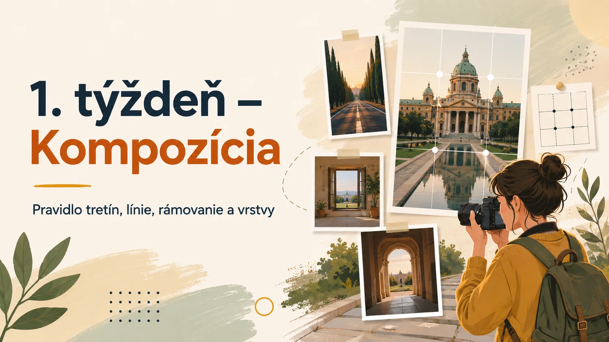
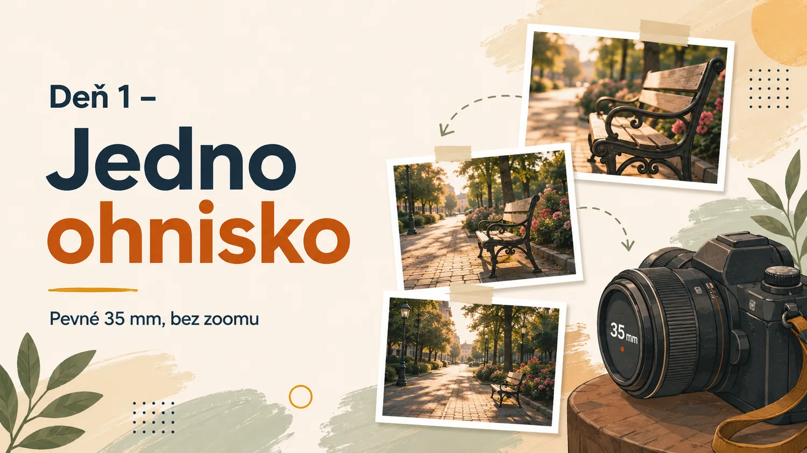
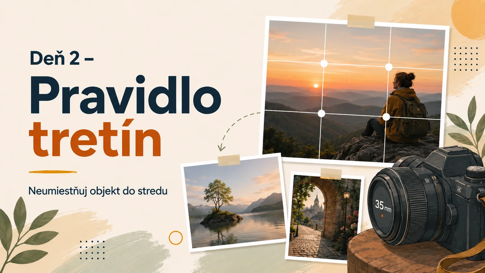
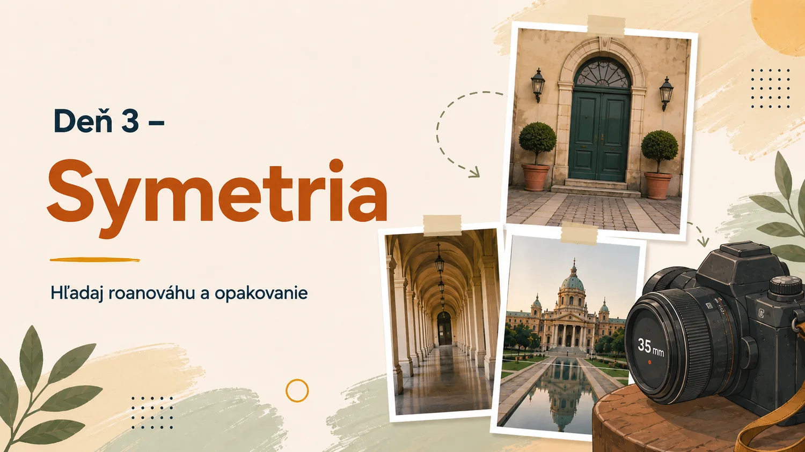
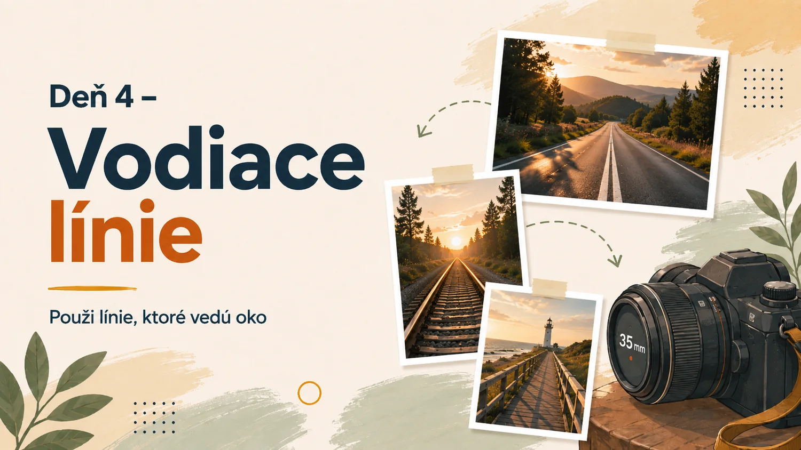
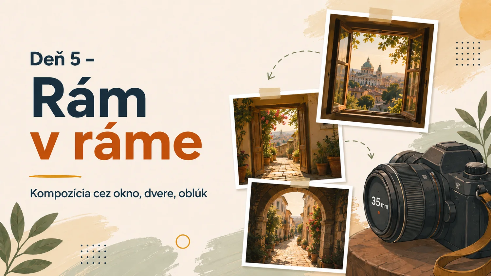
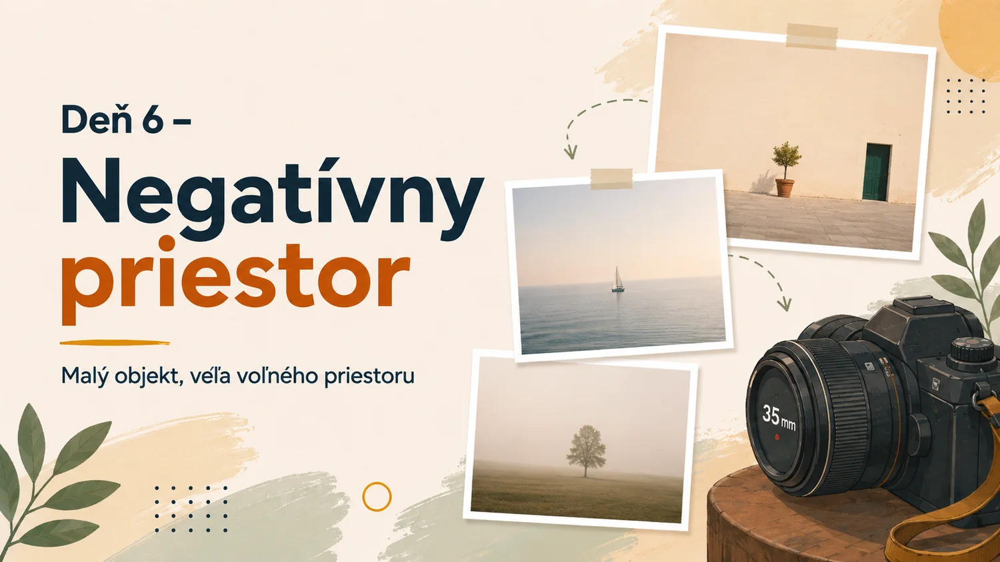
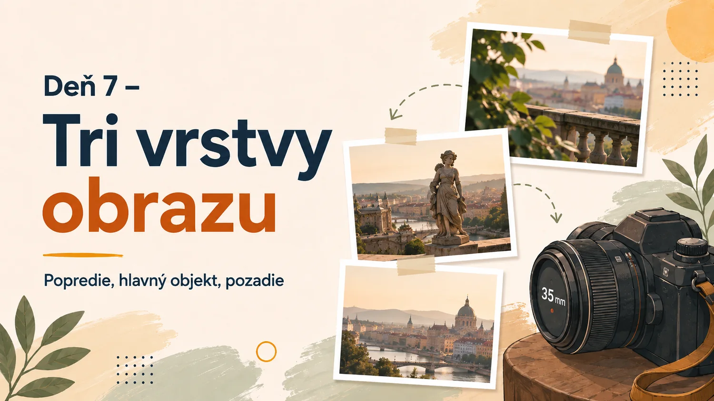

1. týždeň – Kompozícia
Základné princípy usporiadania obrazu

Deň 1 – Jedno ohnisko

Zadanie
Nastav objektív na približne 35 mm a počas celého fotografovania nepoužívaj zoom. Kompozíciu meň pohybom, výškou fotoaparátu a uhlom pohľadu.
Cieľ cvičenia: Vedomá práca s perspektívou a vzdialenosťou.
18–200 mm nastavený na 35 mm
A, Auto ISO, približne f/5,6
Moje hodnotenie a poznámky
Pri hodnotení si polož otázky: Čo je hlavným objektom? Kam sa pozerám ako prvé? Čo funguje? Čo ruší? Čo by som pri opakovaní zmenil?
Deň 2 – Pravidlo tretín

Zadanie
Hlavný objekt neumiestňuj automaticky do stredu. Skús ho položiť do jedného z priesečníkov tretín a ponechaj priestor v smere pohľadu alebo pohybu.
Cieľ cvičenia: Vyváženejšia a dynamickejšia kompozícia.
18–200 mm
A, zapnutá mriežka tretín
Moje hodnotenie a poznámky
Pri hodnotení si polož otázky: Čo je hlavným objektom? Kam sa pozerám ako prvé? Čo funguje? Čo ruší? Čo by som pri opakovaní zmenil?
Deň 3 – Symetria

Zadanie
Hľadaj dokonale alebo približne symetrické scény: priečelia, chodby, schodiská, mosty alebo odrazy.
Cieľ cvičenia: Vnímanie geometrie, rovnováhy a opakovania.
18–200 mm
A, fotoaparát drž vodorovne
Moje hodnotenie a poznámky
Pri hodnotení si polož otázky: Čo je hlavným objektom? Kam sa pozerám ako prvé? Čo funguje? Čo ruší? Čo by som pri opakovaní zmenil?
Deň 4 – Vodiace línie

Zadanie
Použi cestu, koľajnice, zábradlie, tiene alebo hrany budov tak, aby viedli pohľad k hlavnému objektu.
Cieľ cvičenia: Usmernenie pozornosti diváka v obraze.
18–200 mm
A, podľa scény 18–50 mm
Moje hodnotenie a poznámky
Pri hodnotení si polož otázky: Čo je hlavným objektom? Kam sa pozerám ako prvé? Čo funguje? Čo ruší? Čo by som pri opakovaní zmenil?
Deň 5 – Rám v ráme

Zadanie
Fotografuj cez okno, dvere, oblúk, konáre alebo medzeru medzi objektmi. Rám musí podporiť hlavný motív, nie ho zakryť.
Cieľ cvičenia: Oddelenie hlavného objektu od okolia.
18–200 mm
A, zaostrenie na hlavný objekt
Moje hodnotenie a poznámky
Pri hodnotení si polož otázky: Čo je hlavným objektom? Kam sa pozerám ako prvé? Čo funguje? Čo ruší? Čo by som pri opakovaní zmenil?
Deň 6 – Negatívny priestor

Zadanie
Hlavný objekt nech zaberá iba malú časť fotografie. Zvyšok môže tvoriť obloha, stena, voda, hmla alebo iná pokojná plocha.
Cieľ cvičenia: Minimalizmus a vizuálna rovnováha.
18–200 mm
A, korekcia expozície podľa pozadia
Moje hodnotenie a poznámky
Pri hodnotení si polož otázky: Čo je hlavným objektom? Kam sa pozerám ako prvé? Čo funguje? Čo ruší? Čo by som pri opakovaní zmenil?
Deň 7 – Tri vrstvy obrazu

Zadanie
Vytvor záber s popredím, hlavným objektom a pozadím. Popredie môže tvoriť tráva, konár, zábradlie alebo rám dverí.
Cieľ cvičenia: Pocit hĺbky a priestorovosti.
18–200 mm
A, približne f/5,6 až f/8
Moje hodnotenie a poznámky
Pri hodnotení si polož otázky: Čo je hlavným objektom? Kam sa pozerám ako prvé? Čo funguje? Čo ruší? Čo by som pri opakovaní zmenil?